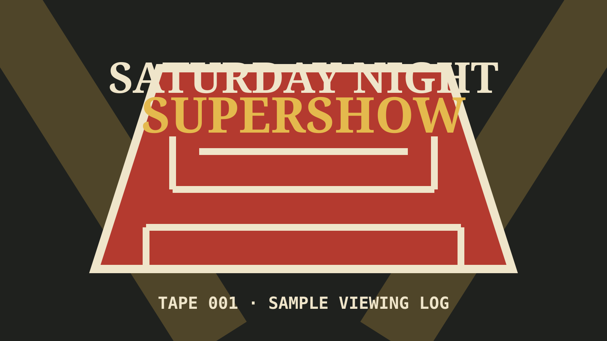

LATESTTAPE 14 NOTES
Saturday Night Supershow
Opening promo, sleeper match, camera-cut complaint, and a finish that worked despite my best efforts.
CHANNEL 03 // HOME VIDEO ARCHIVE
Ringside ReclinerCasual wrestling notes from the softest seat in the arena.
THE COMPLETE TAPE LIBRARY
Choose a show first, then read its notes in the order they happened. Every thought still remains available separately in the post archive.
1 RECORDED SHOW
Newest first. No hidden shelves.

LATESTOpening promo, sleeper match, camera-cut complaint, and a finish that worked despite my best efforts.